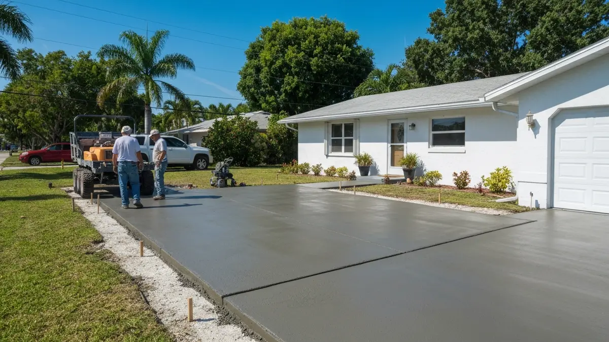

Largo, a jewel in Pinellas County, offers a quintessential Florida lifestyle, but its proximity to the Gulf of Mexico and the Intracoastal Waterway presents unique challenges for homeowners. The pervasive coastal saltwater air, a signature element of Largo's environment, significantly accelerates concrete deterioration beyond typical wear and tear. This means existing driveways, patios, and pool decks in Largo’s established communities, often built decades ago, are particularly susceptible to cracking, spalling, and rebar corrosion. Investing in new, specially-formulated concrete surfaces is essential not only for curb appeal and property value, but also for safety and longevity, ensuring your outdoor spaces stand up to Largo’s beautiful yet demanding climate.
Tampa Concrete Pros stands out for Largo residents due to our deep understanding of the local environment. Being a close-knit neighbor in the Tampa Bay area, we’re intimately familiar with Largo’s unique soil compositions, drainage requirements, and the specific impact of coastal air on building materials. Our teams are frequently working on projects near Ulmerton Road, East Bay Drive, and throughout residential areas like Bardmoor and Belleair Bluffs, giving us firsthand experience with the varying property types and local permitting nuances unique to Largo. We’ve built a reputation for reliability and quality that Largo homeowners trust.
Our service advantages are specifically tailored for the Largo community. We utilize high-performance concrete mixes enriched with admixtures designed to resist chloride penetration and efflorescence, crucial for combating the corrosive saltwater air. Furthermore, our installation techniques prioritize proper drainage and include superior sealing solutions to extend the lifespan of your concrete in Largo's humid, sun-drenched climate. From modest homes near Largo Central Park to waterfront properties closer to Indian Rocks Beach, we ensure every project meets the highest standards for durability and aesthetic appeal.
Tampa Concrete Pros proudly serves the entire city of Largo, a vibrant community situated in central Pinellas County, directly west of Tampa and nestled between Clearwater and St. Petersburg. Our service area within Largo extends from the pristine Gulf beaches near Indian Rocks Road to the bustling corridors along US-19, and from the northern reaches around Ulmerton Road down to Seminole Boulevard. We frequently undertake projects in neighborhoods such as Bardmoor, Belleair Bluffs, High Point, and the areas surrounding Largo Central Park and the Largo Medical Center. Our crews are familiar with all major arteries like East Bay Drive and Starkey Road, ensuring prompt and efficient service delivery throughout this cherished Pinellas County community.
Costs for concrete driveways, patios, and pool decks in Largo vary widely based on size, complexity, demolition needs, and chosen finishes. For a typical Largo home, a standard driveway might range from $4,000-$8,000, while a patio or pool deck can range from $3,000 to $10,000+, depending on square footage and decorative elements. We offer free, detailed estimates tailored to your specific Largo property.
For a typical Largo home (e.g., 1,500-2,000 sq ft property), a standard concrete driveway or patio installation usually takes 3-5 days from start to finish. This includes excavation, form setting, pouring, and initial curing. More complex projects, especially those requiring extensive demolition or intricate decorative finishes for larger Largo residences, may take longer.
Yes, Tampa Concrete Pros proudly serves all neighborhoods and communities within Largo, FL. Whether you reside in High Point, Bardmoor, Belleair Bluffs, or closer to downtown Largo and the Indian Rocks Beach area, our experienced teams are ready to provide exceptional concrete services. We are dedicated to delivering top-quality results to every Largo homeowner and business.
Largo's coastal saltwater air significantly accelerates concrete corrosion, leading to spalling, efflorescence, and rebar deterioration. To combat this, Tampa Concrete Pros utilizes specialized concrete mixes with chloride inhibitors and higher strength ratings for Largo projects. We also apply commercial-grade, penetrating sealants that create a protective barrier against salt and moisture, substantially extending the lifespan and maintaining the integrity of your concrete surfaces in Largo's unique environment.
Ready to schedule your concrete driveways, patios, and pool decks service in Largo? Call us today or use the contact form above — we serve Largo and all surrounding areas of Tampa, FL. Most Largo jobs are scheduled within 48-72 hours.